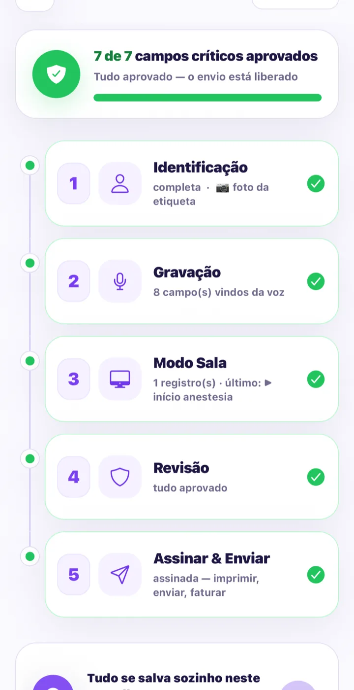

✓Pagamento confirmado · teste de 30 dias ativo
Bem-vindo ao ProntoVoz.
Bem-vindo ao ProntoVoz.
Seu último plantão com papelada já passou.
Seus 30 dias grátis começaram agora — nada será cobrado até o fim deles. Três passos e o seu próximo caso já sai documentado por voz:
Baixe o ProntoVoz no seu iPhone
O app é feito para iPhone — é nele que a voz é transcrita sem sair do aparelho.
Baixar o ProntoVoz para iPhone → O link de instalação também chega no seu e-mail.Receba seus dados de acesso
Enviamos seu usuário e senha para o e-mail usado no pagamento. No primeiro login o app guarda tudo com segurança — depois, é só Face ID.
Dite seu primeiro caso
Fale como você já fala: “paciente de 52 anos, hipertenso, colecistectomia…” O documento se monta sozinho — você confere campo a campo e assina.
Qualquer dúvida no caminho, fale direto com a gente: webcamargo@grupopasdiora.com.br

✓30 dias ativosnada é cobrado no teste
🎙Fale. Confira. Assine.seu primeiro caso hoje